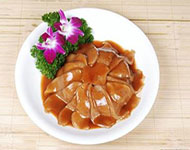
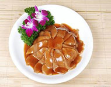

更多美食
更多精彩
标题：秋季食疗防脱发
秋季掉发严重并非就是脱发病，专家表示，头发生长、脱落与季节有关。在秋 冬季，随着气温下降，头发生长变慢，而且由于气候干燥多风，易起静电， 容易加速头发水分的挥发，打破头发的毛鳞片，导致发质结构遭到破坏， 头发就会变得干燥、失去光泽、易打结，出现分岔甚至掉发。梳理或清洁头发时掉发更多 ，这是已经处于休止期尚未脱落的头发，由于梳理及清洁的牵拉促其脱落，不是病理性脱发。 如果超过3个月连续每天都脱发上百根，就要高度警惕。发现自己头顶部的头发逐渐变稀 、变软、变少或者出现发际线后移的征兆，最好能及时就医，了解是否属于病理性脱发。
秋季掉发 可常吃三样食品
木瓜：木瓜含有丰富的维生素C，同时，其铁元素、胡萝卜素 、叶黄素等都可为头发提供多种营养，去除老废的蛋白质堆积， 为头发提供深层洁净和滋养。
猪腿肉：猪腿肉含有维生素B1、维生素B2、 维生素B6等多种维生素，其中维生素B6有预防白发和促进头 发生长的作用，能防止头发掉落。
坚果：坚果，例如核桃、杏仁，能够提供优质的蛋白质， 促进头发生长，同时亦含有丰富的铁、维生素E等成分， 使头发强韧不易断。
秋季掉发 吃2款食疗方
首乌猪脑汤：首乌猪脑汤是上乘之选!何首乌300克，核桃仁30克, 猪脑1个。将何首乌水煎，弃渣去汁，用汁炖核桃仁与猪脑， 熟后调味服食，每天1次，直至长出新发。特别提出的是这不仅仅 是治疗女性掉头发的食疗药物，同时还是一道美味佳肴!
龙眼人参炖瘦肉：龙眼肉20克，人参6克， 枸杞子15克，瘦猪肉150克。猪肉冼净切块，龙眼肉、 枸杞子洗净，人参浸润后切薄片，放入炖盅内，加水适量， 以文火隔水炖至肉熟， 即可食用，适于妇女产后气血亏虚而引起脱发者食用。
相关推荐
 


人气美食推荐
天津狗不理包子，肉馅特别多，包子皮特特别软，里面还有很多汤汁 ，吃上一口，香软可口，特别好吃，吃了一口还想再吃一口
- 豆芽黄瓜汤口味：清淡
- 西红柿鸡蛋汤口味：清淡
- 糖醋排骨口味：清淡
- 红烧小龙虾口味：清淡
- 韩国炒年糕口味：清淡
- 辣椒炒肉口味：清淡
- 四川担担面口味：清淡
- 拔丝香蕉口味：清淡
-
微博关注我们
-
 微博关注我们
微博关注我们
-
 微博关注我们
微博关注我们
厨娘日记，你身边的美食家，只为品质生活
CopyRight © 2004-2016zhoufeng.Com, All Rights Reserved.